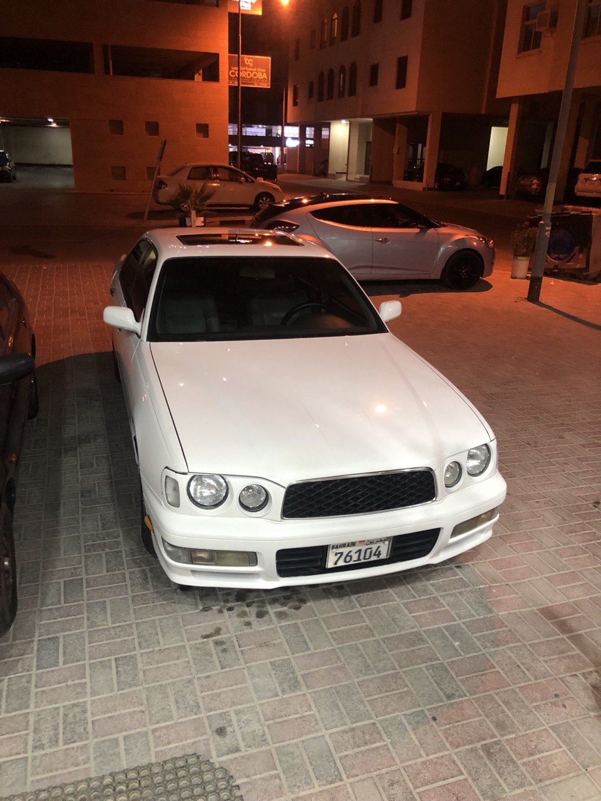
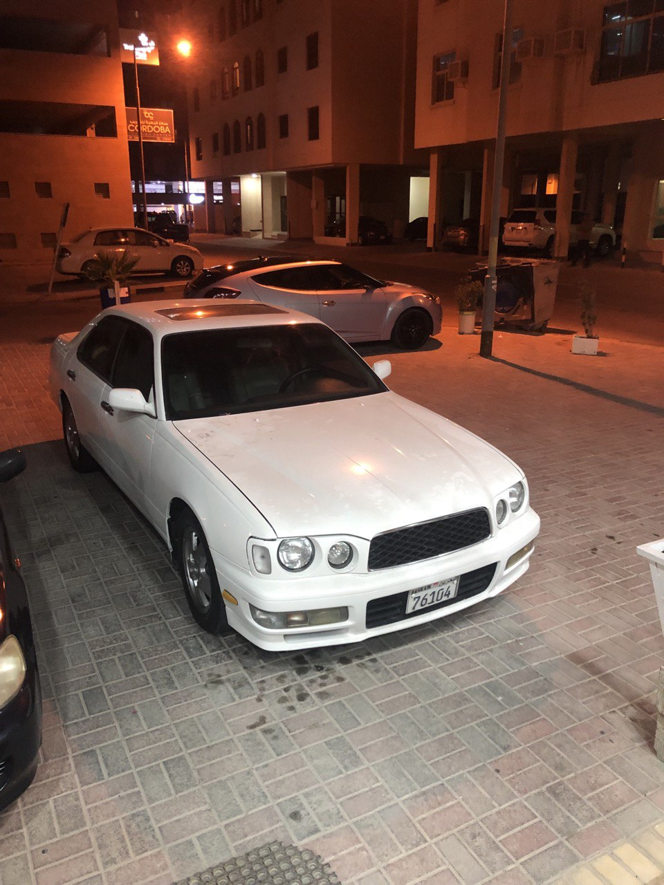
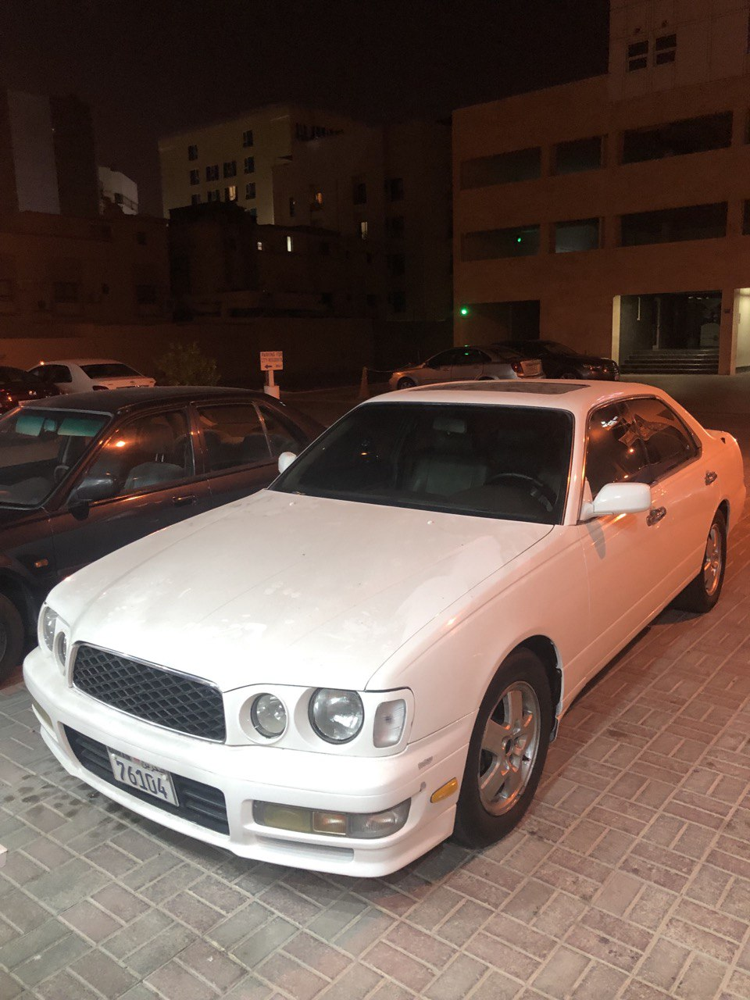
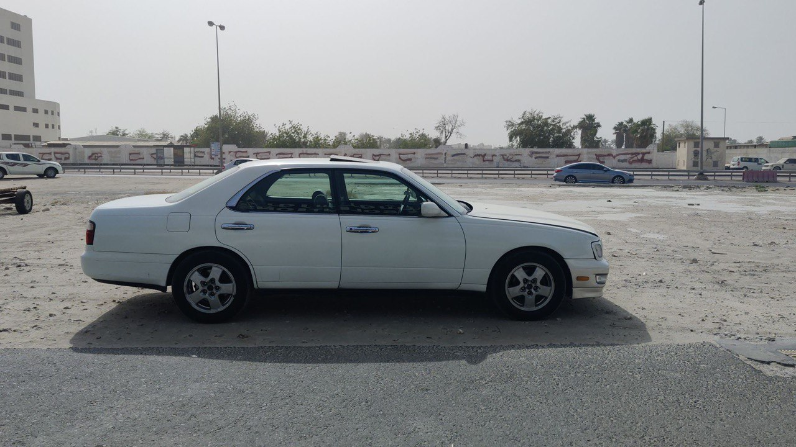
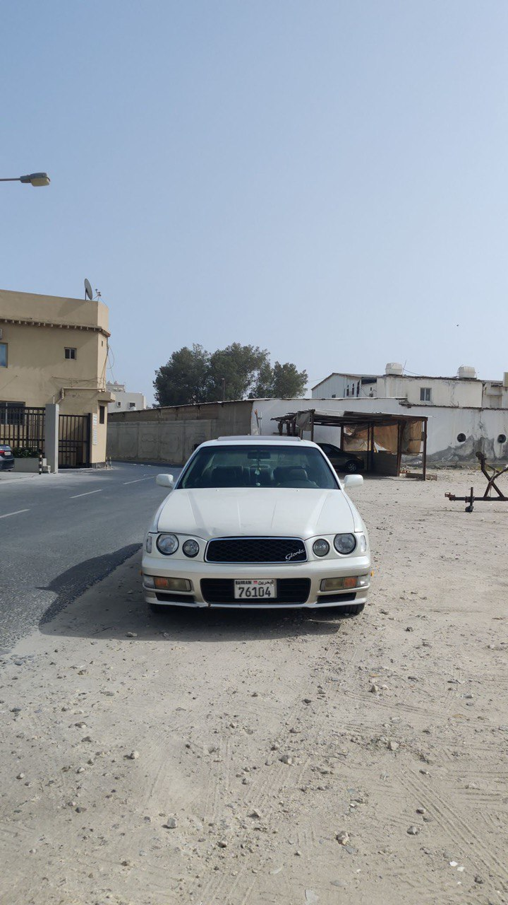
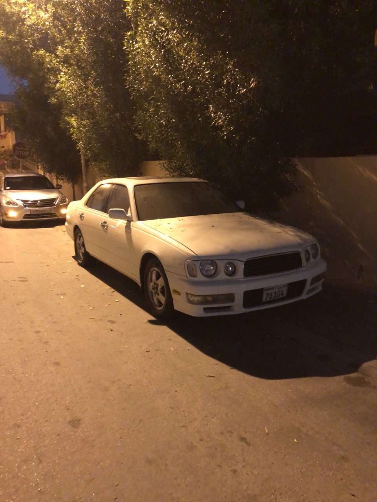
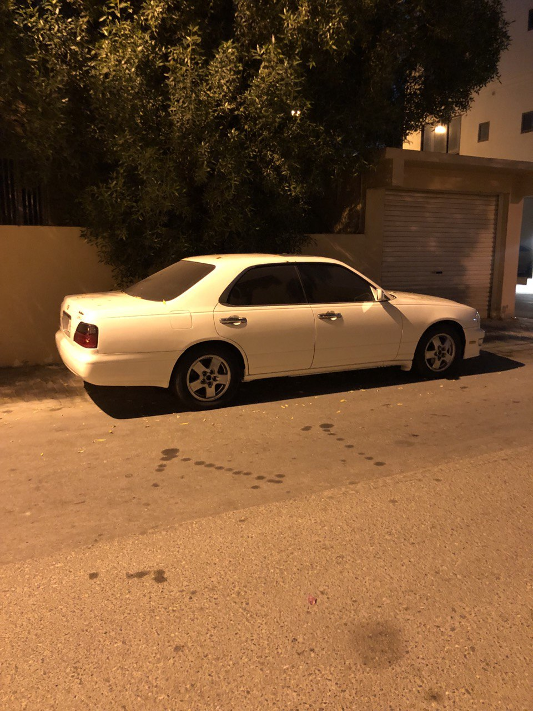

CAR INFORMATION CLUB
In the iconic era of 1990s were japanesse dosmetic market cars were increasing in number for their reliabilty and there highly powerful engines. One of the most remarkable car in the luxery segment came from nissan.Its non-other than one of the most under-rated car in the world of JDM.The car is non other than the mighty Nissan Gloria Y33. it was one of the most amazing car which nissan has created. It even rivaled cars like the Toyota Crown, the Lexus LS400, and the Toyota Century. The car had insane reliabity combined with modern technology and power. It had a 3.0L V6 which was of the VQ series and produced almost 280hp which was lot in the era of 1990s.
  The remarkable aspects of the Nissan Gloria is has follows -
The Y33 series Nissan Gloria is given a body restyle in 1995 which had a amazing box style body shape. Major changes were the introduction of the newly developed VQ series engine, and replacing the VG series, with the VQ30DET turbo utilizing an intercooler and DOHC valvetrain architecture.This series of the engine produced far more power, thanks to its new turbo system spooling at around 18,000rpm and making a power of 10psi. AWD is introduced only on the RB25DET, including Nissan's ATTESA E-TS. The diesel RD28 is now only available with a 4-speed automatic transmission. Due to economic pressure, some of the trim levels are discontinued, leaving the Gran Turismo type X, Gran Turismo Ultima, Gran Turismo SV, Gran Turismo S, Gran Turismo, Brougham VIP, Brougham and the Brougham J.
Although the car dated back to more than 30 years from now, it had a great deal of features compared to cars of that time. The Nissan Gloria was more concentrated to be a luxery VIP cars which would suite the need for business man and rich people beacuse it offer good comfort, reliabilty and good power. It had leather seats which were a boon during the old times. The car also has a air purifier system located at the end of the car for purifying air. Other than this the car alos had a reclining rear row seats for comfort and relaxing journey for the passengers. These points made the car stand out from other car manufactures making the same segment car.
The last generation was introduced in June 1999, and was offered as a sedan; a center "B" pillar was added to improve vehicle solidity, and improve crash worthiness, but is obscured behind side window glass and frameless side windows. The VG series engine continues to be offered with the 5-speed computer-controlled automatic transmission, with the 4-speed offered with the RD28 diesel engine. A manual transmission was no longer offered. Trim levels offered were the Gran Turismo SV, Grand Turismo, and the top level vehicle is called the Gran Turismo ULTIMA. Other trim levels offered were the Brougham VIP type C, Brougham G, Brougham, Classic SV and the Classic. By then, the popularity of the Nissan Cima affected sales of the Gloria, as sales were not as high as in past generations. Production of the Gloria ended after 46 years, and was replaced by the Nissan Fuga in October 2004. Tenth generation Y33
  